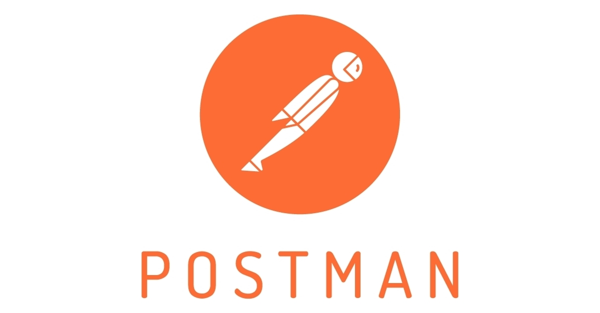

HTTP
HTTP(HyperText Tranfer Protocol), es un protocolo de comunicación en la Web, este define las reglas ue utilizan los componentes software (clientes, servidores y proxies) para comunicarse.
Es un protocolo sin estado que utiliza TCP como protocolo de transporte y determina los tipos de peticiones que los clientes pueden enviar, así como el formato y estructura de las respuestas. También define una estructura de metadatos, en forma de cabeceras que se envían tanto en las peticiones como en las respuestas.
API REST
Una API, o interfaz de programación de aplicaciones, es un conjunto de reglas que determinan cómo las aplicaciones o los dispositivos pueden conectarse y comunicarse entre sí. Una API REST es una API que se ajusta a los principios de diseño de REST, un estilo de arquitectura también denominado transferencia de estado representacional. Por este motivo, las API REST son a veces denominadas API RESTful.

POSTMAN
Es una herramienta de testeo y desarrollo que ayudan a los grandes equipos a manejar API`s complejas y manejar testeos.
Algunas características son que tiene espacio colaborativo para ciertas APIs, versión de control integrado, permiso de acceso detallado, además de ofrecer gran variedad de tipos de endpoint, esta herramienta facilita el cambio entre diferentes tipos de testing, lenguajes de API`s y tipos de petición cuando es necesario
JSON
JSON(JavaScript Object Notation) es un formato de texto sencillo para el intercambio de datos. Se trata de un subconjunto de la notación literal de objetos de JavaScript, aunque, debido a su amplia adopción como alternativa a XML, se considera un formato independiente del lenguaje.